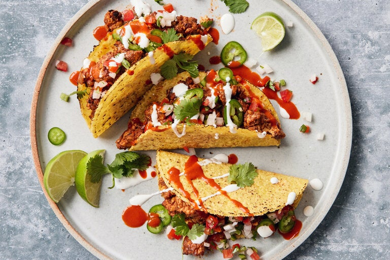

Tempeh Tacos

Description
Hard-shell tacos, or tacos dorados, have a long history in northern Mexico and immigrant communities in California and Texas. In 1951, Glen Bell added them to the menu of his drive-in stand in San Bernardino, Calif. He would go on to found (you guessed it) Taco Bell, the fast food chain, which would help popularize hard-shell tacos in the United States. While the typical hard-shell taco is made by piling spiced and saucy ground meat and a party of toppings into a shatteringly crisp shell, this vegan version calls for tempeh. Tempeh is made by fermenting cooked soybeans into a spongelike cake with a porous structure that browns, crumbles and soaks up big flavors incredibly well. Here, it’s seasoned with well-toasted tomato paste, ground cumin, chili powder and smoked paprika, as well as nutritional yeast for added umami. That said, the recipe can also be made with vegan store-bought meat crumbles if you prefer.
Ingredients
- 2 tbsp neutral oil (such as grapeseed or sunflower), plus more as needed
- 2 (8 oz) packages of tempeh, crumbled into roughly 1/2-inch pieces
- 1 large yellow onion, cut into 1/2-inch pieces
- Kosher salt and black pepper
- 3 tbsp tomato paste
- 2 tsp ground cumin
- 2 tsp chili powder
- 1 1/2 tsp nutritional yeast
- 1 tsp smoked paprika
- 1 tsp red hot sauce, plus more to taste (optional)
- 12 hard taco shells, warmed
- Desired toppings such as: nutritional yeast, grated Cheddar or Jack cheese, lime, shredded lettuce, chopped white onion, pico de gallo, sour cream, cashew crema, sliced jalapeños, cilantro, avocado
Instructions
- In a large (12-inch) skillet, heat the oil over medium-high. Add the tempeh and onion, season with salt and pepper, and cook, undisturbed, until deep brown, 2 minutes. Stir and cook until browned all over, 3 to 5 minutes. Add more oil as needed if the pan looks dry.
- Add the tomato paste, cumin, chili powder, nutritional yeast and smoked paprika. Season with salt and cook, stirring constantly, until brick red and beginning to stick to the skillet, 5 to 7 minutes. Try not to rush this step; if it begins to burn, deglaze with a bit of water and reduce the heat.
- Add 1 cup water and the hot sauce, if using. Cook, stirring and scraping up browned bits, until thickened and the mixture is sizzling, 2 to 4 minutes. Season to taste with salt and hot sauce.
- Divide the filling between the taco shells, then top with chosen toppings.